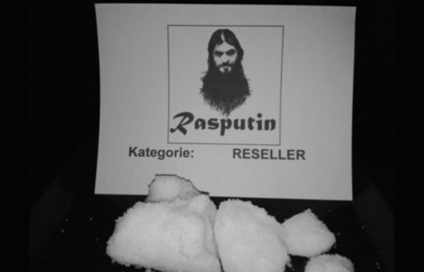
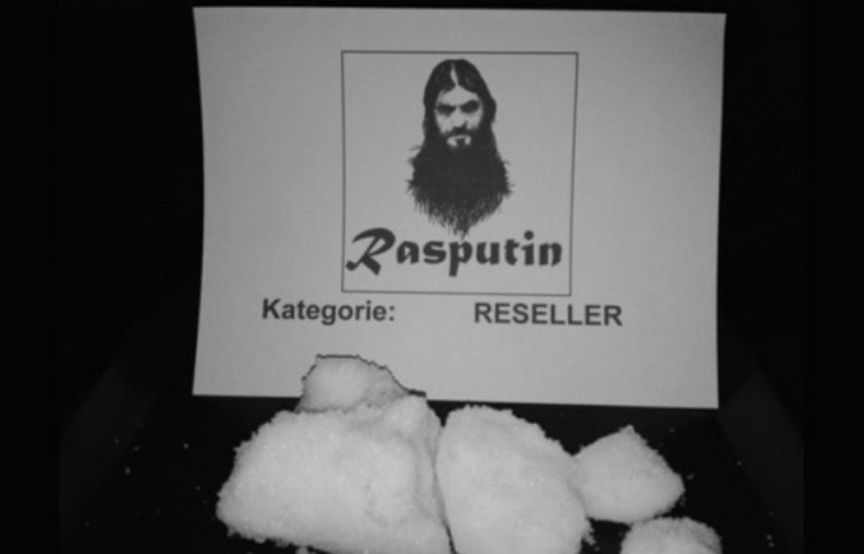

Operation Rasputin: A Darkweb Drug Investigation in Austria
~2 min read | Published on 2020-07-21, tagged Arrested, Darkweb-Vendor, Drug-Bust, Drugs using 405 words.
Austrian authorities arrested eight people as part of an investigation into a prolific darkweb drug vendor.
The investigation began in 2019, according to an announcement from the Federal Criminal Police Office. One darkweb vendor caught the attention of law enforcement in Graz. The vendor, identified as “Rasputin” (and similar variations of the name), reportedly sold more than 100 kilograms of various controlled substances. Rasputin specialized in cocaine, heroin, amphetamine, and ecstasy pills. His profits reportedly reached seven digits.

Police first arrested an individual who had amphetamines, cocaine, and marijuana in his possession. That person worked with the police and provided them with the names of some of his contacts in Burgenland. They seized more amphetamines and cocaine during the investigation into suspects in Burgenland. They followed a trail of evidence to Innsbruck where they arrested a 44-year-old suspected of operating the Rasputin accounts on darkweb marketplaces. Police quietly arrested the alleged mastermind in December 2019, according to a police spokesperson. Investigators learned that Rasputin had so-called “sub-dealers” who distributed Rasputin’s narcotics on his behalf. During the investigation, Austrian police rounded up seven suspected co-conspirators.
Hansjörg Bacher, a spokesman for the public prosecutor’s office in Graz, said the investigation involved extensive physical surveillance, text analysis, and telephone surveillance.
[img=]Rasputin used a screenshot of his Dream Market profile in the listings on Empire Market[/img]
The co-conspirators sold Rasputin’s drugs in exchange for cryptocurrency, the police said. Police seized amphetamines, ecstasy, cocaine, heroin, mephedrone, marijuana, crystal meth, and ketamine during searches at the properties owned by Rasputin and his “sub-dealers.” They also found firearm blanks and false identification documents at Rasputin’s house. Rasputin had allegedly equipped his co-conspirators with firearms for their protection, including a 9mm Makarov pistol (likely 9×18mm PM) and a Walther CP99 (which is a .177 caliber pellet gun rather than a genuine firearm). Authorities said Rasputin kept his associates in line with “dangerous threats” and other forms of coercion.
Operation Rasputin is now complete. The trial for the 44-year-old mastermind is underway. He faces drug trafficking charges, weapons trafficking charges, and charges stemming from his use of fake IDs. The court already sentenced one of his co-conspirators to eight years in prison. Five of his associates will be in court this week.
The Federal Criminal Police Office has been in touch with Europol about the case. Law enforcement in Ireland and Germany also have an interest in the investigation into Rasputin.
The investigation began in 2019, according to an announcement from the Federal Criminal Police Office. One darkweb vendor caught the attention of law enforcement in Graz. The vendor, identified as “Rasputin” (and similar variations of the name), reportedly sold more than 100 kilograms of various controlled substances. Rasputin specialized in cocaine, heroin, amphetamine, and ecstasy pills. His profits reportedly reached seven digits.

Cocaine was one of the more popular products sold by Rasputin
Police first arrested an individual who had amphetamines, cocaine, and marijuana in his possession. That person worked with the police and provided them with the names of some of his contacts in Burgenland. They seized more amphetamines and cocaine during the investigation into suspects in Burgenland. They followed a trail of evidence to Innsbruck where they arrested a 44-year-old suspected of operating the Rasputin accounts on darkweb marketplaces. Police quietly arrested the alleged mastermind in December 2019, according to a police spokesperson. Investigators learned that Rasputin had so-called “sub-dealers” who distributed Rasputin’s narcotics on his behalf. During the investigation, Austrian police rounded up seven suspected co-conspirators.
Hansjörg Bacher, a spokesman for the public prosecutor’s office in Graz, said the investigation involved extensive physical surveillance, text analysis, and telephone surveillance.
[img=]Rasputin used a screenshot of his Dream Market profile in the listings on Empire Market[/img]
The co-conspirators sold Rasputin’s drugs in exchange for cryptocurrency, the police said. Police seized amphetamines, ecstasy, cocaine, heroin, mephedrone, marijuana, crystal meth, and ketamine during searches at the properties owned by Rasputin and his “sub-dealers.” They also found firearm blanks and false identification documents at Rasputin’s house. Rasputin had allegedly equipped his co-conspirators with firearms for their protection, including a 9mm Makarov pistol (likely 9×18mm PM) and a Walther CP99 (which is a .177 caliber pellet gun rather than a genuine firearm). Authorities said Rasputin kept his associates in line with “dangerous threats” and other forms of coercion.
Operation Rasputin is now complete. The trial for the 44-year-old mastermind is underway. He faces drug trafficking charges, weapons trafficking charges, and charges stemming from his use of fake IDs. The court already sentenced one of his co-conspirators to eight years in prison. Five of his associates will be in court this week.
The Federal Criminal Police Office has been in touch with Europol about the case. Law enforcement in Ireland and Germany also have an interest in the investigation into Rasputin.